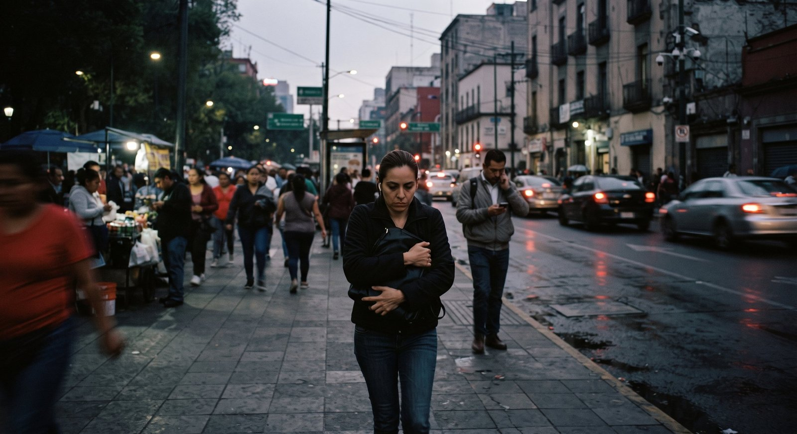

Imagen: generada con Inteligencia Artificial
En México, la violencia ha dejado de percibirse como un hecho excepcional para convertirse en parte de la vida cotidiana. El miedo ya no aparece únicamente después de un acto violento; también se manifiesta en decisiones diarias: evitar ciertas calles, dejar de salir de noche, compartir la ubicación en tiempo real o desconfiar de quienes nos rodean. Poco a poco, la violencia modifica la manera en que habitamos el espacio público y nos relacionamos con los demás.
De acuerdo con la Encuesta Nacional de Seguridad Pública Urbana (ENSU) del INEGI, en marzo de 2026, el 61.5% de las personas adultas consideró inseguro vivir en su ciudad. Más allá de la cifra, lo preocupante es lo que revela: millones de personas viven en un estado constante de alerta. La violencia no solo produce víctimas directas, sino que también erosiona la tranquilidad, altera rutinas y debilita la confianza social.
Con el tiempo, esta exposición continua genera una forma de desgaste colectivo. Las noticias sobre homicidios, feminicidios, desapariciones o extorsiones se vuelven recurrentes hasta integrarse al paisaje cotidiano. Lo que antes provocaba conmoción e indignación comienza a percibirse como normal. Y cuando una sociedad normaliza la violencia, el impacto no es únicamente emocional, sino también social y político.
Poco a poco, la desconfianza se convierte en una forma de supervivencia. Se debilitan los vínculos comunitarios, disminuye la participación en el espacio público y se fractura la percepción de seguridad tanto individual como compartida. En este contexto, construir paz no implica únicamente reducir las cifras de violencia, sino también recuperar las condiciones que permiten convivir sin miedo a ella.
Como planteó Johan Galtung (1985), la paz positiva no se limita a la ausencia de violencia, sino que también depende de la existencia de condiciones sociales que permitan vivir con dignidad y seguridad. Cuando el miedo se vuelve permanente, como ocurre en nuestro país, esas condiciones comienzan a deteriorarse.
Frente a esta realidad, el desafío no es solo contener la violencia, sino evitar que el miedo termine definiendo la vida de todos los mexicanos. Porque cuando el miedo se vuelve rutina, la violencia deja de limitarse a las calles y comienza a instalarse silenciosamente en la forma en que vivimos, convivimos y entendemos a los demás.
CIPMEX · Centro de Investigación para la Paz México, A.C. · Paz que se piensa, paz que se construye